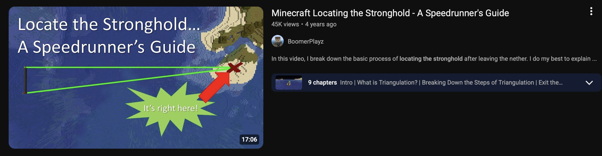

This tutorial is based on the speedrunning technique demonstrated in this video
The Stronghold Triangulation method uses two throws of an Eye of Ender from precise locations to form a right triangle, allowing you to use trigonometry to calculate the exact distance to the Stronghold.